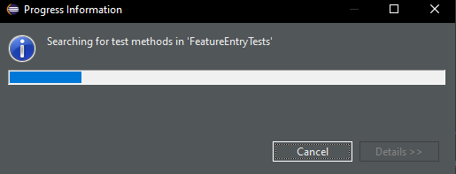
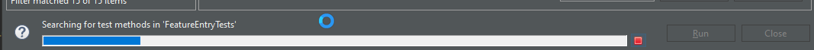
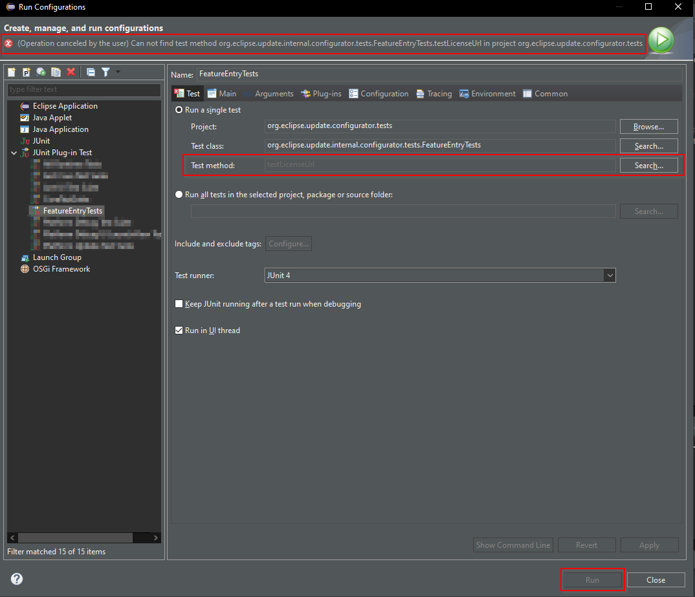
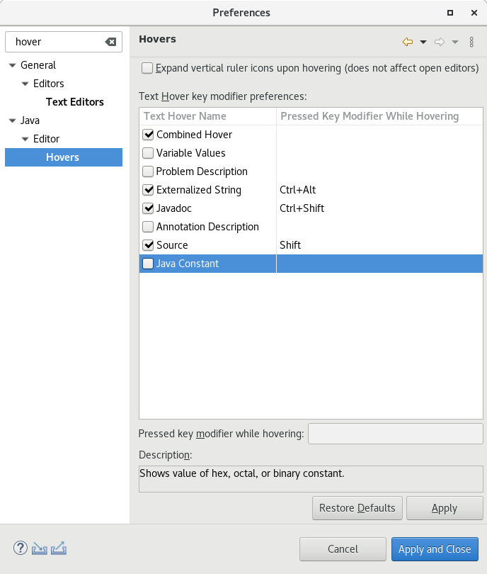
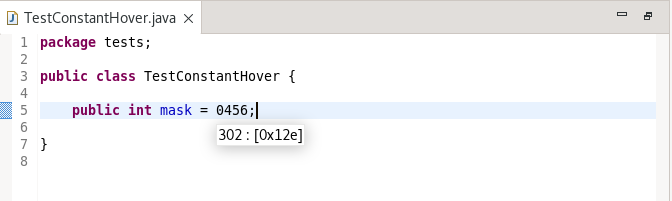
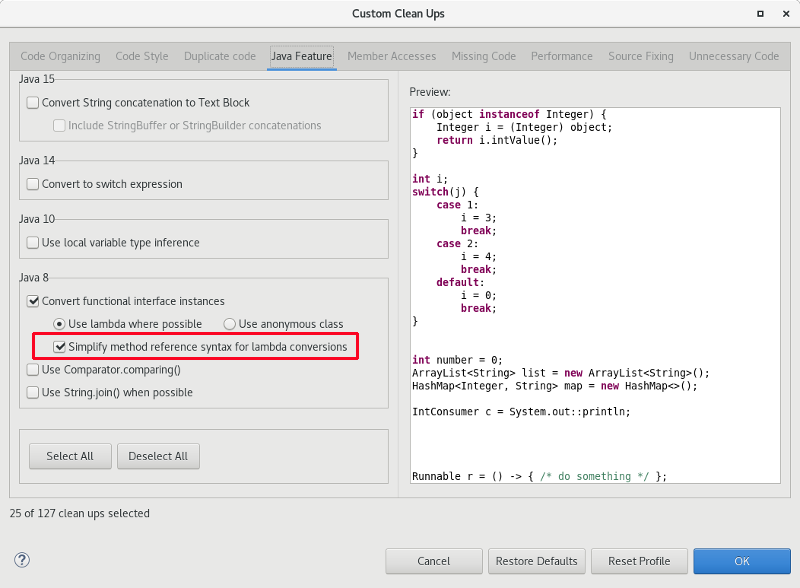
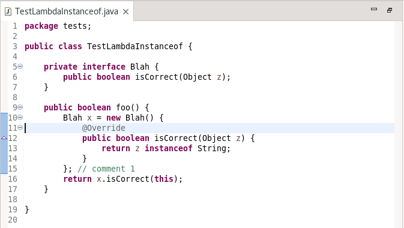
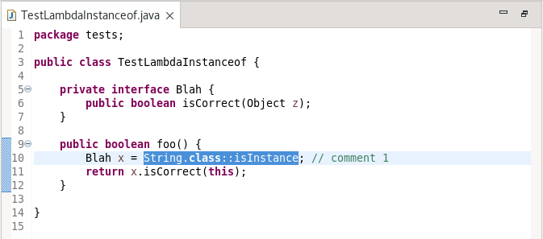
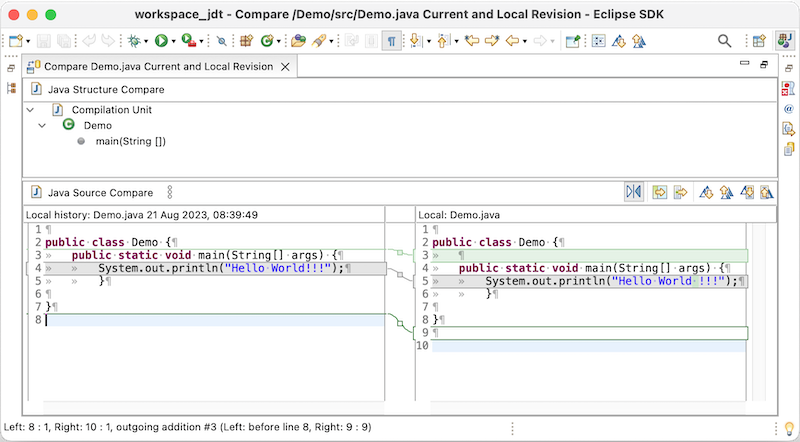
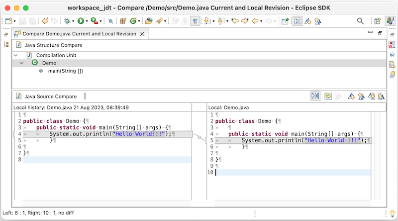

Here are descriptions of some of the more interesting or significant changes made to the Java development tools (JDT) for the 4.29 release of Eclipse. They are grouped into:
See also the Eclipse Platform What's New document for changes in the Platform.
We also recommend to read the Tips and Tricks.
JUnit |
|
| Show progress when searching test methods in JUnit run/debug configuration |
A progress dialog and a progress bar have been added to the Run/Debug configurations of JUnit tests.
If the configuration references a test method then a search takes place, which sometimes requires some time and led previously to a UI freeze. There is now a progress indication in the form of a progress dialog when first opening the Run/Debug Configurations dialog:  Or in the form of a progress bar if the dialog is already opened:  In case the search is canceled by the user, the cancelation will be reported in the notification area of the Run/Debug Configurations dialog, the text field Test method: will be disabled and and the Run/Debug button will be disabled. The Search... button right next to Test method: remains enabled and triggers the search again. . |
Java Editor |
|
| Java Constant Hover |
A new hover has been added to display the values of integer or float constants specified in binary, octal, or hex
format. When hovering over such constants, the value will be shown in decimal format followed by the value in hex.
The hover can be activated in the Java > Editor > Hovers preference page either by selecting the Combined Hover or by clicking on the Java Constant check box.  The following shows hovering over an integer constant specified in octal format:  |
| Lambda Cleanup Improvements |
A number of improvements have been made to the Java cleanups concerning converting to use lambdas and simplifying existing
lambdas. First of all, the cleanup preference: Convert functional interface instances on the Java Features tab
for Java 8 has added an additional checkbox: Simplify method reference syntax for lambda conversions. This checkbox is
selected by default and instructs the cleanup to use method reference syntax where possible when converting from anonymous
classes. If the checkbox is unselected, method reference syntax will not be used by default (sometimes required to avoid
a runtime NullPointerException) but will only be used if the user has also selected the Simplify lambda expression and
method reference syntax cleanup option found on the Code Style tab. By default, the Quick fix to convert an
anonymous class will also by default now use the method reference syntax where possible.
 The second improvement to the lambda cleanups and quick fix is that the code now recognizes use of instanceof can be replaced with a method reference to isInstance .The following code:  with the lambda cleanup will by default change to:  |
Java Views and Dialogs |
|
| Improved "Ignore Whitespace" in Java Compare |
Up to now the "Ignore White Space" context menu action in the Java Compare editor ignored all whitespace, including what may be semantically significant whitespace.
 For example, a white space difference in a Java string literal is semantically significant while trailing white space is not.This has now been inproved so that e.g. white space changes in string literals are also shown while "Ignore White Space" is active.  |